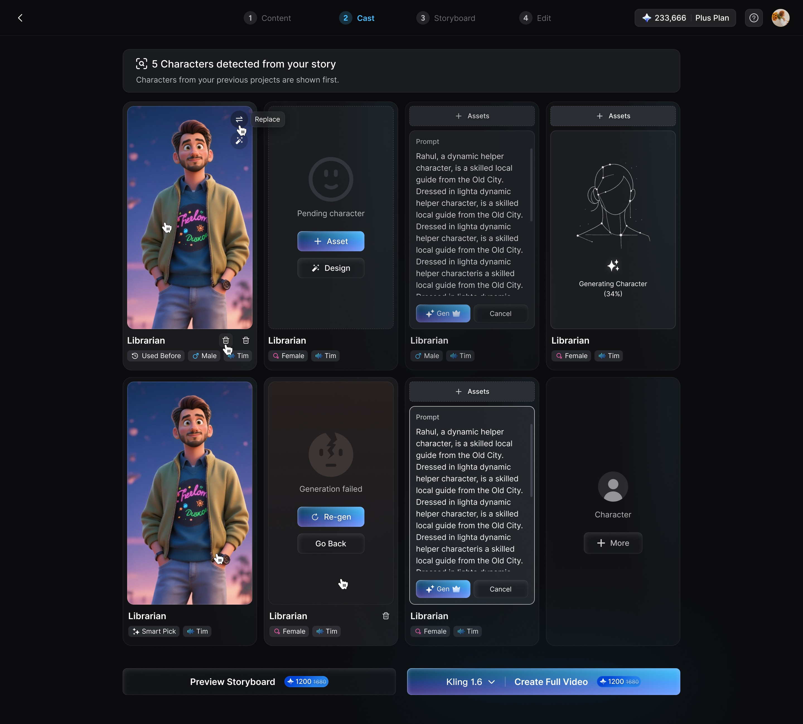

Magiclight WF
$ product-manager --mode workflow --scope video-agent
把复杂的视频 AI 生产，从固定 pipeline 变成可理解、可控制、可恢复的产品工作流。产品经理不控制每个节点，而是设计正确的上下文、边界和反馈回路。
复制到 Claude Code / Codex / Cursor
帮我把一个视频需求跑成可控的 WF。 先确认目标、受众、平台、时长、比例和成功标准； 再选择创意路线，生成 Script、Storyboard 和 Edit Plan； 把资产、生成任务、字幕、合成和 QA 记录成可追踪状态； 低风险步骤自动推进，结构、成本和不可逆动作需要确认； 失败时优先局部修复或重新路由，不要默认整条链路重做； 最后用首剪接受率、任务完成率、恢复率、成本和延迟复盘。
PM WF · 产品经理的工作层
Intent & Product Layer
- 目标 / 受众 / 平台 / 时长
- 创意路线与成功标准
- 澄清问题与用户确认点
把用户说的“做一个好看的视频”变成可执行、可评估的产品问题。
Harness & Execution Layer
- Skill 路由 / 任务状态 / 资产事实
- 生成 / 合成 / 字幕 / QA
- 局部重试与失败恢复
让长链路任务可观察、可解释、可暂停，也能从最小影响范围恢复。
Workflow Routing · 工作流路由
| 阶段 | 事实产物 | 产品判断 |
|---|---|---|
| 需求 | Intent Brief | 先澄清，再执行 |
| 规划 | Script · Storyboard | 高成本生成前确认 |
| 生产 | Asset DAG · Run Report | 可观察 · 可恢复 |
| 评估 | QA · Feedback | 局部修复或重路由 |
Agent Loop · 从固定 Pipeline 到 Agent
User Brief
↓
Intent Parser → Style Extractor → Skill Router
↓
Generation Plan → Skill Execution → Evaluation
↓
Refine / Re-route → Approval → Accepted Creative

E-commerce Replication Skills · 电商复刻 Skills
commerce_replication_skill → parse product page, assets, claims, and visual language → map product value props to a short-form creative brief → generate scene plan, copy variants, and platform-native edits → validate product consistency, CTA, price, and policy boundaries → return: source assets / prompt versions / edit plan / QA report
Creative Routes · 创意路线
Feature Ad
- 功能证明优先
- 旁白驱动产品录屏
- 字幕 / CTA / 合成 / QA
用逐词 ASR 找到演示区间，让产品操作和叙事时序保持一致。
Hook Story
- 冲突开场与情绪变化
- 第二人物 / 旁观者 POV
- 互动评论与 CTA
服务社交内容增长：先抓住注意力，再把产品信息放进故事里。
Epic Story
- 世界观 / 英雄 / 反转
- 首尾帧延续视觉状态
- 电影感字幕与黑场 CTA
适合品牌叙事与高视觉冲击内容，但要避免把一次性交付锁死成模板。
Creative Run
- 目标 / 变体 / Prompt 版本
- 资产 / QA / 审批 / 发布
- 表现与下一轮动作
每一次生产都应是可追踪的创意运行记录，而不只是一个输出文件夹。
Product Guardrails · 自动化边界
| 原则 | 自动化 | 保留确认 |
|---|---|---|
| 风险 | 低风险、可逆步骤 | 结构、成本、不可逆动作 |
| 失败 | 局部修复、单链路重试 | 结构性变化、重新规划 |
| 评估 | 协议、技术、QA 检查 | 创意偏好与最终接受 |
Signals · 用什么判断 WF 真的有效
intent_accuracy → 用户是否被正确理解 first_pass_acceptance → 首剪是否可用 task_completion → 是否完成真实目标 recovery_rate → 失败后能否最小代价恢复 cost × latency → 自动化是否值得
A concise case-study view of a video-agent product workflow. Metrics are evaluation targets, not performance claims.